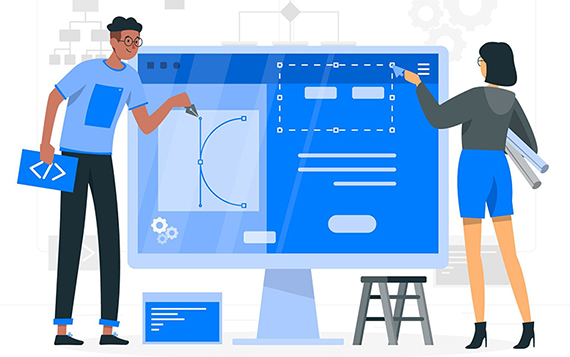

I used the five stages of Design Thinking to build this portfolio website step by step.

My goal is to make a personal portfolio to show my identity, projects, ideas on global goals and accessibility features.
I thought about website visitors. It is important to let them clear navigation, readable text and comfortable layout on both computer and mobile phones.
I planned page structure: use a navigation bar to switch pages, apply card style for projects, and use soft colors for a friendly visual effect(you can switch to dark colours if you prefer).
I built HTML structure, then added CSS styles. I divided content into different sections(less codes) and adjusted layout for different screens.
I modified font size, spacing and colors to fix layout problems and improve user experience, also adding background music, contact information, and pictures.